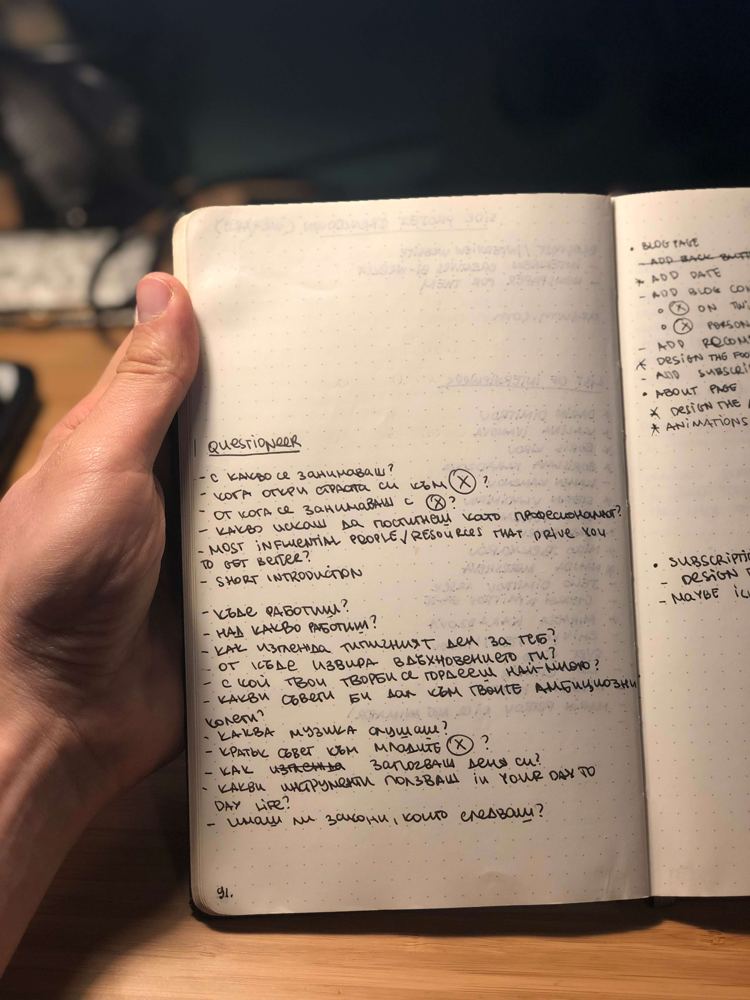
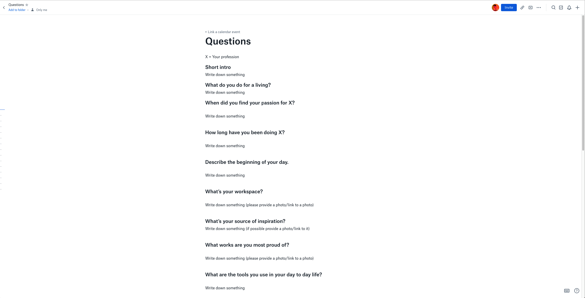

We-are Design Blog
Multidiscpilinary Journey
We-are interviews a mixture of popular designers and creatives from countries with underdeveloped communities, creating a locus where we exchange our personal and professional experience.

How it all started
We are blog started as a quick CSS exercise of mine and grew to a growing platform, which aims to put the spotlight of world design on hardworking, humble and successful creatives around the world.
The idea behind the design was that I wanted to give back to my local Bulgarian community. I tried to interview a mixture of worldwide designers and creatives from Bulgaria, to create a place where inspiration and experiences were being shared.
Figuring out the right qustions
This was the most challenging task in the whole creation process of we-are. The questions were the foundation of the entire blog. They set the tone and the complete feel of the website. My idea was to make the interviews both insightful and personal. This is why I decided to keep questions like "When did you find your passion for X?" or "Describe the beginning of your day" – it's because through questions like this you get a more personal feeling towards the interviewed person.
The initial questions I came up with in Bulgarian
Developing the interview process
From the beginning, I was fully aware that interviews of this sort are going to be based mainly on kindness and compassion. We-are is this young, small locus of creatives giving insights over their lives both as humans and as professionals. It's driven by the acts of the interviewees, by their openness and kindness.
With that thought in my head, I wanted to focus that there is no pressure around the interviews. None. I'll send you over the Dropbox Paper document, and you could take all the time on the world. If you don't feel like writing it down - don't do it, it's perfectly fine. No pressure. No judgement.
In the beginning, the Dropbox Paper document looked something like this. It was my fault for not giving myself some time to reflect and discover that this pre-filled document feels entirely soulless.
The questionnaire felt to dry and unwelcoming
I tried to add more structure to the document, so I used the new placeholder option that Dropbox Paper introduced. Rather than leaving the input field sections with a generic description text, I aimed to make it more playful and personal through some tiny tweaks in the input copy. For example the input field for the question "When did you find your passion for X?" is "What was the first step towards your astonishing career?" – with this, I'm trying to make the interviewer feel appreciated and cared for – which is the actual truth.

The reworked questionnaire, having a more playful, finished touch
All of the people on the blog are people that I personally like and admire. This is why I've left this message at the end of every questionnaire -
Before you close this document, I want to thank you with all my heart for taking the time out and supporting the cause of this tiny blog. It really means a lot to me, and it surely does matter a lot for the further development of our creative community. — Kindest regards, Alexander from we-are
With that playful yet personal copy, I'm trying to convey the feeling of togetherness and empathy through words for the interviewed.
Building up the visuals
I've always had a thing for clean, functional design. I've been struggling with keeping up with trends because I didn't find them attractive. From the skeuomorphic designs to the pastel flat UI's, to the gradient-heavy apps I've always known that a light background, a beautiful Swiss font and a right amount of whitespace almost always do the work. This is why I decided to challenge myself – I tried to create a merge of brutalism and order. To contain the "chaos" in a grid, with set spacings, colours and type scales.

And this is how I came up with the Instagram posts, through which I was going to promote the interviews. What were the most critical parts of the post? The name of the interviewed creative, a photo of them and their title.
Evolving the project
Currently, we-are stands strong with around unique 200 users visiting the website monthly. While there is a significant drop of users, due to the inactivity of the blog in the past 4 to 5 months. I'm planning on growing the blog, and hopefully, after the first half of this year, I'll be able to release the We-are podcast & we-are newsletter.
Challenges, closure and conclusion
We-are is a project of mine, which challenges me till this very day. Its whole idea is built on top of the mutual dedication and kindness between all the interviewers and the idea behind this blog. While increasing the traffic, or generating some revenue is something I'd love to happen, that doesn't stray me away from my primary goal of this blog – developing a place where designers from around the world share their experiences.
Future goals and plans for the project
I'm planning on writing blog posts on the topics of creative works and design, as well as starting a podcast where I'll talk about fantastic design figures throughout history. Stay tuned! ✨
Tools used in this project 🛠
Dropbox Paper, Sketch, Visual Studio Code, HTML, CSS, JavaScript